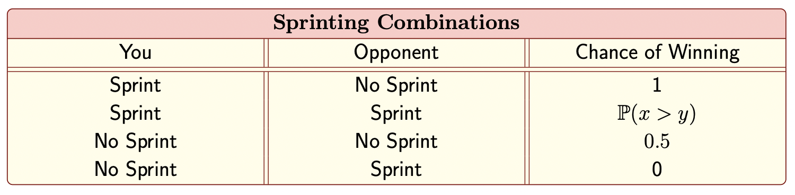
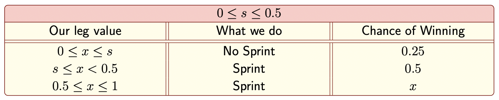
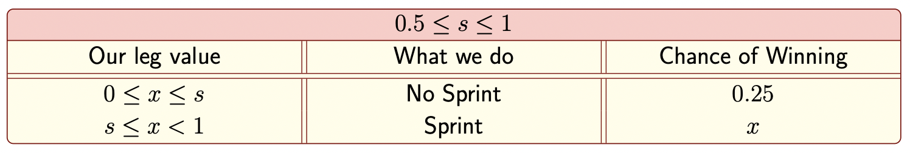
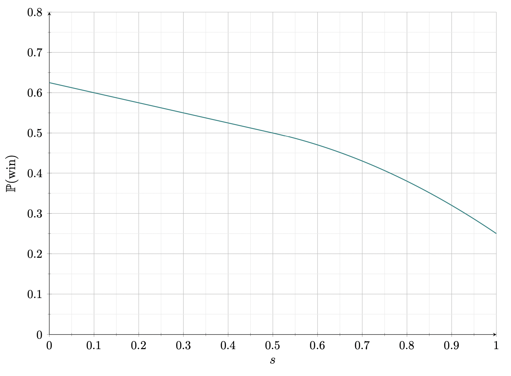

July 25: Can You Sprint to the Finish?
Puzzle
Every summer I try to run a cycling-related puzzle to coincide with the Tour de France. This time around, you and a competitor are approaching the finish of a grueling stage of the Tour de Fiddler. One of you will win the stage, the other will come in second. As you approach the finish, each of you will test the feeling of your legs, which will be somewhere between $0$ percent ("I can barely go on!") and $100$ percent ("I can do this all day!"). For the purposes of this puzzle, these values are chosen randomly, uniformly, and independently.
Immediately after feeling your legs, you and your opponent each have a decision to make. Do you maintain your current pace, or do you sprint to the finish? Among those who sprint for the finish, whoever’s legs are feeling the best will win the stage. But if no one sprints for the finish, everyone has an equal chance of winning the stage. In the Tour de Fiddler, you must each decide independently whether to sprint for the finish based on your legs—you don’t have time to react to your opponent’s decision.
Normally, teams at the Tour de Fiddler keep their strategy and tactics close to the vest. But earlier today, your opponent’s manager declared on international television that if (and only if) your opponent’s legs were feeling 50 percent or better, they’d sprint for the finish.
As you are about to test your legs for the final sprint and see how they feel, what are your chances of winning the stage, assuming an optimal strategy?
Solution
Let $X\stackrel{\text{iid}}{\sim}\text{Unif}(0,1)$ and $Y\stackrel{\text{iid}}{\sim}\text{Unif}(0,1)$ be the random variables representing the decimal representation of you and your opponent's leg state, respectively. Let $x$ and $y$ be fixed values chosen from $X$ and $Y$. Then each combination of your decisions for sprinting/no sprinting (and our winning probabilities for each combination) are given below.
Let's start with the unknown case where we both sprint. We can say:
$$\mathbb{P}(X>y)=1-\mathbb{P}(X\leq y)=1-y$$Where we made use of the cumulative distribution function for a uniform distribution on $[0,1]$. Since we are in the case where both you and your opponent are sprinting, we must condition on the fact that $Y\geq 0.5$. The conditional probability density function of $Y$ is:
$$f_{Y|\text{sprint}}(y)=\frac{f_Y(y)}{\mathbb{P}(Y\geq 0.5)}=\frac{1}{0.5}=2$$Where we used the known probability density function for a uniform distribution for $f_Y(y)$. And so averaging on all possible speeds for $y$ (where we assume that our opponent is sprinting) gives us the desired winning probability in this case:
\begin{align*} \mathbb{P}(\text{Win}\;|\;\text{Both sprint}) & =\int_{0.5}^1 \mathbb{P}(X>y)\times f_{Y|\text{sprint}}(y)dy \\ & =\int_{0.5}^1 (1-y)\times 2dy \\ & = 0.25 \end{align*}So now let's figure out what our winning chances are. If I choose not to sprint, the probability that I win is:
$$\mathbb{P}(\text{Win}\;|\;\text{Never sprint})=0.5(0.5)+0.5(0)=0.25$$If I choose to sprint, the chances that I win are:
$$\mathbb{P}(\text{Win}\;|\;\text{Always sprint})=0.5(1)+0.5(0.25)=0.625$$Which is true for all possible values of $x$. So it seems like I should always choose to sprint.
But let's consider another strategy: suppose we only sprint if our leg state is above some threshold value, call it $s\in[0,1]$, i.e we sprint if and only if $x\geq s$. Then we consider two cases:
Case 1: You sprint ($X=x\geq s$). Your opponent can choose not to sprint (with probability $0.5$) in which case you win. If your opponent does sprint, then $Y\geq 0.5$, and so we must find:
$$\mathbb{P}(Y< x\;|\;Y\geq 0.5)=\frac{\mathbb{P}(0.5\leq Y< x)}{\mathbb{P}(Y\geq 0.5)}=\frac{\mathbb{P}(Y\leq x)-\mathbb{P}(Y\leq 0.5)}{\mathbb{P}(Y\geq 0.5)}=\frac{x-0.5}{0.5}=2x-1$$In which case, our winning probability is:
$$\mathbb{P}(\text{Win}\;|\;X=x\;\cap\;\text{We sprint})=0.5(1)+0.5(2x-1)=x$$Case 2:You do not sprint ($X=x< s$). For this, if we want to win, we must hope our opponent does not sprint. If so, either of us will be equally likely to win. And so:
$$\mathbb{P}(\text{Win}\;|\;X=x\;\cap\;\text{No sprint})=\mathbb{P}(Y< 0.5)\times 0.5=0.25$$Now we must integrate over $x$, and we consider two regimes depending on whether our optimal value for $s$ is above or below $0.5$:
Regime 1: $0\leq s\leq 0.5$. Summarizing what we found above is shown in the table below. For the second row, since $x<0.5$, and our opponent only sprints if $y>0.5$, we would lose if he chose to sprint. If he chooses not to sprint (with probability $0.5$), we would win; hence our chance of winning is $0.5$ in that case.
And so we have:
\begin{align*} \mathbb{P}(\text{Win}) & = \int_0^s 0.25dx+\int_s^{0.5}0.5dx+\int_{0.5}^1 xdx= \frac 58-\frac s4 \end{align*}Regime 2: $0.5\leq s\leq 1$. Summarizing the results above, we get:
 $$\mathbb{P}(\text{Win})=\int_0^s 0.25dx+\int_s^1xdx=\frac s4+\frac 12-\frac{s^2}{2}$$So in total:
$$\mathbb{P}(\text{Win})=\begin{cases} \frac 58-\frac s4 & 0\leq s\leq 0.5 \\ \frac s4+\frac 12-\frac{s^2}{2} & 0.5\leq s\leq 1 \end{cases}$$This piecewise function plotted is shown below:
Notice the our highest chance of winning occurs when $s=0$, and the probability coincides with our previous value of $0.625$. Therefore, we can safely determine that our optimal strategy should be to always sprint no matter how our legs are feeling. Adopting this strategy, our chances of winning is $\boxed{0.625}$.